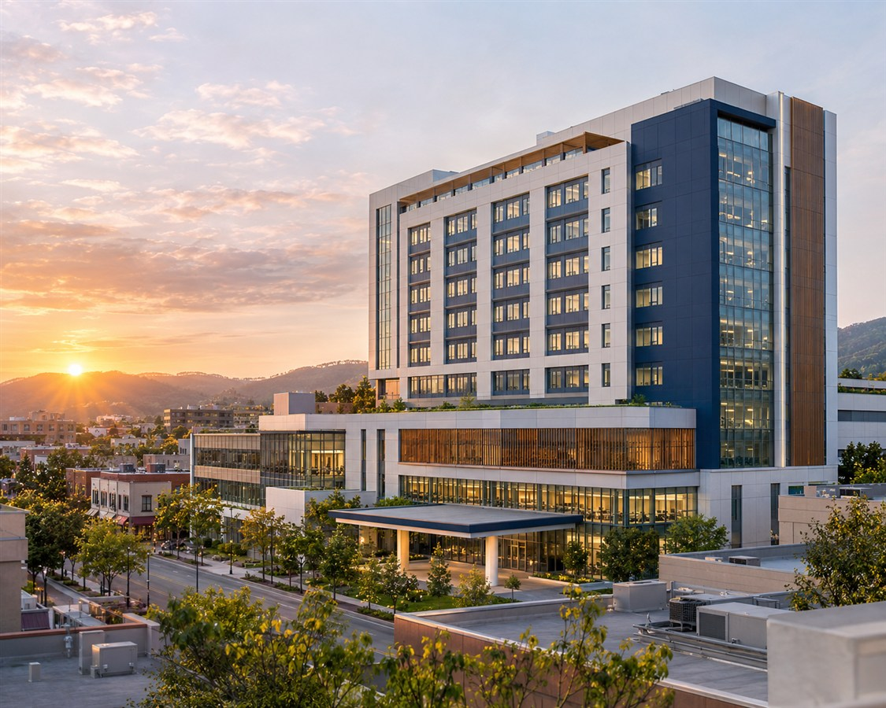
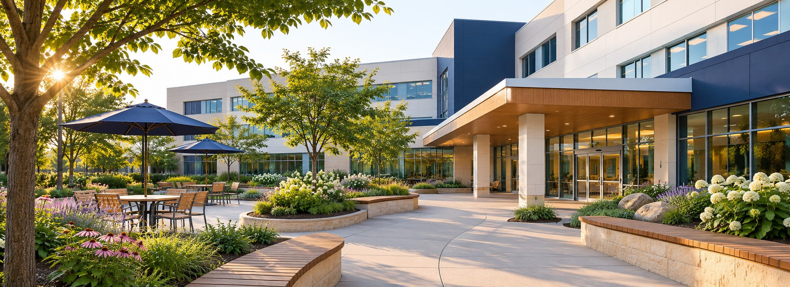
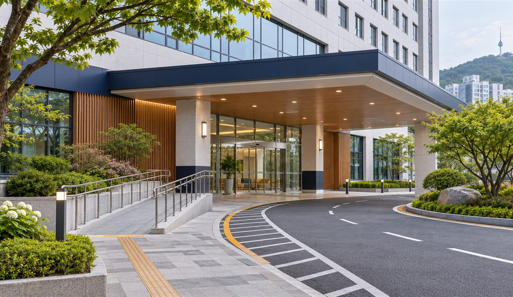
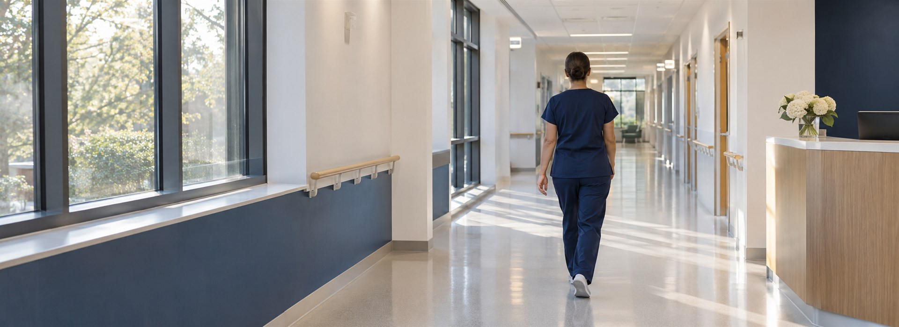
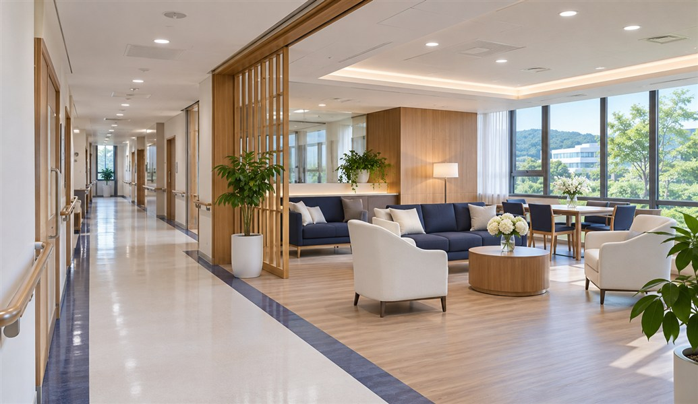
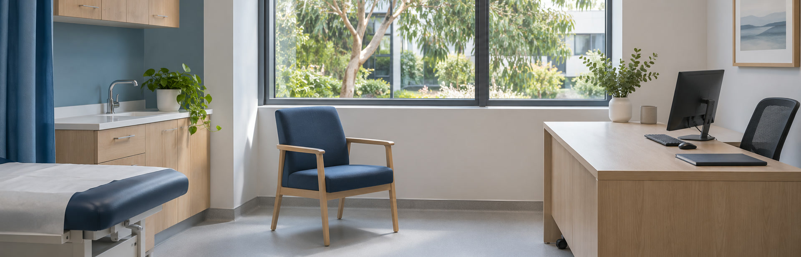

본문 바로가기
서해중앙병원
SEOHAE CENTRAL HOSPITAL
메뉴
진료 안내
진료과
의료진
전문센터
외래 진료
응급 진료
진료 절차
건강검진센터
응급의료센터
심장내과
내과
신경과
외과
내과 의료진
외과 의료진
방문과 입원
오시는 길
주차
입원과 퇴원
입원 생활
면회 시간
주간 식단
서류 발급
비급여 진료비
편의시설
층별 위치
예배와 기도
장례 시설
병원 소개
병원 소개
병원장 인사말
미션과 가치
병원 연혁
진단 장비
건강 정보
건강 콘텐츠
건강 상담
소식과 문의
병원 소식
자주 묻는 질문
전화번호
채용
신경과 채용 안내
고객 의견
통합 돌봄 병동
안전한 진료 환경
이용약관
개인정보 처리방침
쿠키 정책
환자의 권리와 의무
비급여 항목
로그인
회원가입
진료 예약
진료 시간
글자 확대
응급실 041-000-0200
검색


Seohae Central Hospital
응급의료센터
041-000-0200
24시간 · 365일
국가 지원 독감 예방접종 10. 1. – 12. 31.
국가건강검진 연말 예약 마감 12. 20.
간호·간병통합서비스 병동 확대
국가 지원 독감 예방접종 10. 1. – 12. 31.
국가건강검진 연말 예약 마감 12. 20.
간호·간병통합서비스 병동 확대
외래 평일 08:30 – 17:30 · 토요일 08:30 – 12:30
면회 평일 18:00 – 20:00
본관 앞 방문객 주차장 2시간 무료
외래 평일 08:30 – 17:30 · 토요일 08:30 – 12:30
면회 평일 18:00 – 20:00
본관 앞 방문객 주차장 2시간 무료
전문센터
전체보기
+
진료 분야
←
1
/
→

진료과
전체
내과 계열
외과 계열
진단 · 지원
입원 안내
입원 수속


병원 소식

공지
국가 지원 독감 예방접종
2026. 09. 21
입원
간호·간병통합서비스 병동 확대
2026. 10. 07
안내
제증명 발급 창구 위치 변경
2026. 10. 13
전체 소식